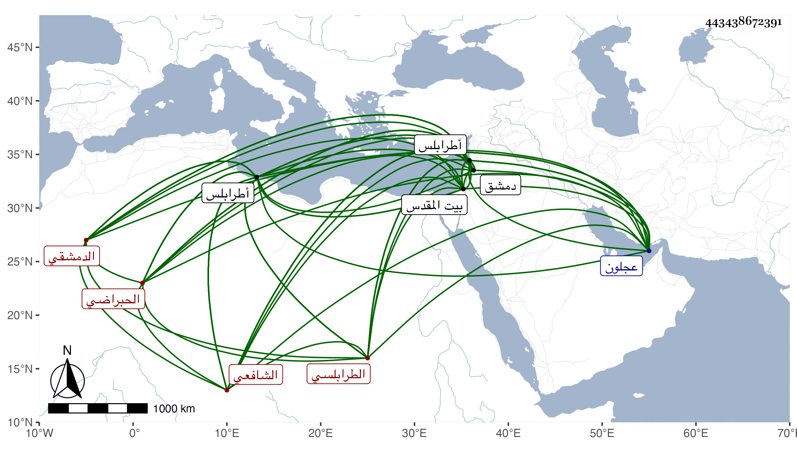

0902Sakhawi.DawLamic.ITO20230111-ara1.EIS1600.443438672391
Biography ID: 443438672391
241
محمد بن يحيى بن أحمد بن دغرة بن زهرة الشمس الحبراضي الأصل الدمشقي الطرابلسي الشافعي والد التاج عبد الوهاب الماضي ويعرف بابن زهرة بضم الزاي . ولد في سنة ستين وقيل كما قرأته بخط ولده سنة ثمان وخمسين بحبراض وانتقل منها وقد قارب التمييز إلى طرابلس وقد قرأ القرآن فحفظ العمدة والتنبيه والمنهاج الأصلي وألفية ابن معطي وتفقه بالنجم بن الجابي والشمسين ابن قاضي شهبة وكان خاتمة أصحابه والصرخدي والشرف الغزي ثم وقع بينهما بحيث صار الشمس يتكلم فيه والصدر الياسوفي والشريشي والزين القرشي وعنه أخذ التفسير وآخرين ، ولقي البلقيني لما قدم مع الظاهر برقوق فأخذ عنه وكان يسميه شيخ الروضة وأخذ الأصول عن الشهاب الزهري والصرخدي ، وعنه أخذ العربية أيضا وسمع على ابن صديق والكمال بن النحاس ثالث حديث أبي علي بن خزيمة قالا أنا به الحجار وعلي التاج محمد بن عبد الله بن أحمد بن راجح وكان يذكر أنه سمع على ابن قواليح والمحب الصامت وتكسب بالشهادة مدة وتصدر بالجامع الأموي بعد موت شيخه ابن الجابي على خير واستقامة فلما كان بعد الفتنة ضاق به الحال فتوجه إلى عجلون ثم رجع إلى دمشق وتوجه إلى طرابلس فأقام بها يقرئ ويحدث ويفتي ويخطب وأثرى وصار شيخ تلك البلاد ، وحج مرارا وزار بيت المقدس في سنة ست وثلاثين وكان إماما عالما دينا جليلا فقيها شيخ الشافعية في بلده بلا مدافع كما وصفه شيخنا في حوادث سنة ست وثلاثين من أنبائه تصدى لنشر العلم خمسين سنة وانتفع به الناس طبقة بعد أخرى فكان ممن أخذ عنه البرهان السوبيني والبلاطنسي بل وأخذ عنه قديما التقي بن قاضي شهبة وقال أنه انتفع به كثيرا قال وهو الذي قرر في قلبي اعتقاد الإمام أبي الحسن الأشعري رحمهما الله ، وكان حسن التعليم حظيت به طرابلس وخطب بجامعها المنصوري مدة طويلة واعتقده أهلها وغيرهم وتبركوا بدعائه وقصد بالفتاوى من الجهات البعيدة وصنف شرحا للتنبيه في أربع مجلدات احترق في الفتنة وشرحا للتبريزي في ثلاث مجلدات فيه فوائد وتفسيرا في نحو عشر مجلدات سماه فتح المنان في تفسير القرآن وتعليقا على الشرح والروضة في ثمان مجلدات وغير ذلك وله تعليقة في مجلد كبير كالتذكرة يشتمل على تفسير وحديث وفقه وعربية ووعظ القصيدة التي نظمها بموافقة المصريين في الانتصار لابن تيمية وتكفير من كفره وصرح بتكفير القاضي وتبعه أهل بلده حبا فيه وتعصبا معه فلم يسع الحمصي إلا الفرار لبعلبك ثم كاتب المصريين فجاء المرسوم بالكف عنه واستمراره على قضائه فسكن الأمر كما أشير إليه في ترجمته كل هذا مع حسن الأخلاق ولين الجانب والاقتصاد في ملبسه بحيث يلبس الملوطة والعمامة الصغيرة والمحاسن الجمة . ومات بعد أن أضر وأقبل على العبادة والخير في ليلة الجمعة ثامن عشرى جمادى الأولى سنة ثمان وأربعين بطرابلس ودفن بتربة الجامع وتأسف الناس على فقده ولم يخلف بعده بها مثله رحمه الله وإيانا .
